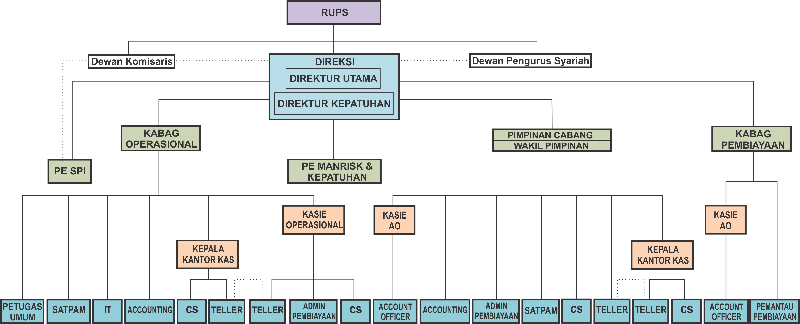
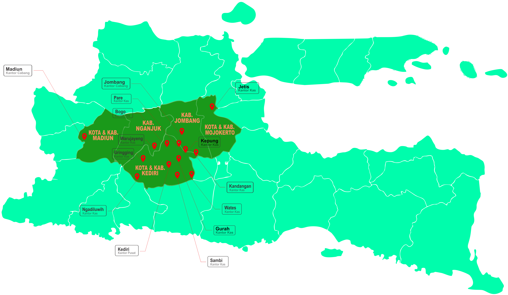

Profil Perusahaan
Seperti diketahui, perkembangan Bank Syariah terutama yang berbentuk Bank Pembiayaan Rakyat Syariah masih jauh tertinggal dibanding dengan Bank Konvensional, konsep perbankan konvensional yang telah melekat dan mendarah daging tidak mungkin diubah dengan konsep syariah dalam waktu yang singkat. Namun demikian, didasari atas komitmen dan tujuan untuk berusaha di bidang perbankan syariah, berdirinya BPR Syariah Artha Pamenang berawal dari keinginan para pendiri yang utamanya untuk turut serta membangun bangsa dalam pemberdayaan dan pengembangan ekonomi berbasis Syariah Islam khususnya di wilayah Kediri.
PT Bank Pembiayaan Rakyat Syariah Artha Pamenang adalah Bank atau Lembaga Keuangan milik swasta yang berkedudukan di Kediri Jawa Timur. PT Bank Pembiayaan Rakyat Syariah Artha Pamenang didirikan pada tanggal 23 Maret 2010, berdasarkan akta nomor 162, tanggal 29 Oktober 2009 yang dibuat oleh Notaris Paulus Bingadiputra, SH dan telah mendapatkan persetujuan dan pengesahan dari Menteri Hukum dan Hak Asasi Manusia Republik Indonesia, sesuai Surat Keputusan Nomor AHU-57676.AH.01.01 Tanggal 25, Bulan Nopember, Tahun 2009.
Modal inti adalah sebesar Rp. 8.000.000.000 dan modal disetor saat ini adalah sebesar Rp. 6.000.000.000.
Pemegang Saham PT Bank Pembiayaan Rakyat Syariah Artha Pamenang
| Nama | Status Pemegang Saham | Saham |
|---|---|---|
| Harijanto Hiendarto | Pengendali | 25% |
| Drs. Eka Susanto Widadi Sunarso | - | 18.75% |
| Hadi Soetirto | - | 18.75% |
| Mintarya | - | 18.75% |
| Yudiono Muktiwidjojo | - | 18.75% |
Pengurus PT Bank Pembiayaan Rakyat Syariah Artha Pamenang
| Direksi | Dewan Komisaris | Dewan Pengawas Syariah |
|---|---|---|
| Drs. H Suhardi (Direktur Utama) |
Aziz Affandi Durbajani, SH (Komisaris Utama) |
Sulistyo Wahono, S.Ag (Ketua Dewan Pengawas Syariah) |
| Setyawati, ST (Direktur Kepatuhan) |
Yudhi Irwanto (Komisaris) |
Ropingi, S.Ag., M.Pd (Dewan Pengawas Syariah) |
Visi dan Misi
Visi
“Menjadi Mitra Sejati dalam Pengembangan Ekonomi Umat”
Misi
“Turut Serta Membangun Bangsa melalui Pengembangan Ekonomi Syariah”
Struktur Organisasi

Jaringan Kantor

Daftar Kantor
Kantor Pusat
Jl. Soekarno Hatta No. 107-A, Tepus – Kediri
Telp : 0354 - 694123
Kantor Kas Pare
Jl. Pahlawan Kusuma Bangsa No.13-C, Pare – Kediri
Telp : 0354 - 396789
Kantor Kas Gringging
Jl. Raya Gringging No. 36, Grogol – Kediri
Telp : 0354 - 770234
Kantor Kas Sambi
Jl. Raya Sambi No. 56, Sambi – Kediri
Telp : 0354 - 411566
Kantor Kas Gurah
Jl. Dr. Wahidin No. 152-B, Gurah – Kediri
Telp : 0354 - 548345
Kantor Kas Ngadiluwih
Jl. Prof. Dr. Moestopo No. 479, Ngadiluwih – Kediri
Telp : 0354 - 475555
Kantor Kas Bogo
Jl. RA. Kartini No. 46, Plemahan – Kediri
Telp : 0354 - 4521266
Kantor Kas Wates
Jl. Raya Tawang No. 12 , Wates – Kediri
Telp : 0354 - 7412242
Kantor Kas Kandangan
Jl. Raya Kandangan No. 10, Kandangan – Kediri
Telp : 0354 - 3250555
Kantor Kas Warujayeng
Jl. A. Yani No. 144, Warujayeng – Nganjuk
Telp : 0358 - 5281599
Kantor Kas Kepung
Ruko Halbanero Jl. Harinjing No. 166, Kepung - Kediri
Telp : 0354 - 3251010
Kantor Cabang Jombang
Jl. KH. Hasyim Asyari 1 No. 2-C, Kaliwungu - Jombang
Telp : 0321 - 5288886
Kantor Kas Jetis
Jl. Panglima Sudirman No. 89 Kupang, Jetis - Mojokerto
Telp : 0321 - 3671777
Kantor Cabang Madiun
Jl. Raya Madiun Solo No. 119-A, Jiwan - Madiun
Telp : 0351 - 4472277